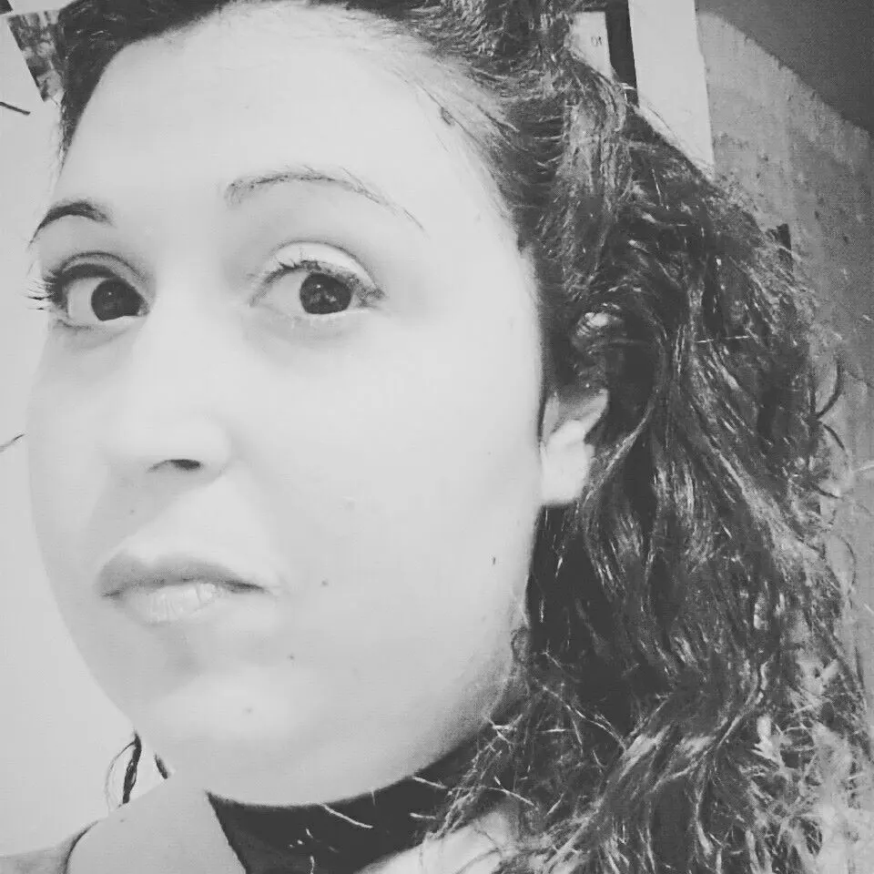
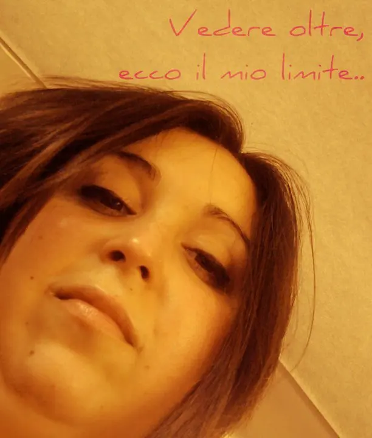

E vi parlo di me e della mia amica/nemica sedia
Ciao a tutti :)Questo sarà un post diverso dal solito. Non parlerò di nessun prodotto e ne di nessun informazione riguardante il mondo della cosmesi o collaborazioni o altro.
Oggi parlerò di me.

So che dovevo scriverlo già da un pò ma non trovavo mai un modo per iniziare, o semplicemente perché forse non ero pronta per farlo.
Del resto io riesco a cavarmela se devo parlare di qualsiasi cosa ma parlare di me stessa proprio non ne sono capace.
Ora però ci provo.
Da quando sono piccola ho girato ospedali e cliniche per cercare di trovare un rimedio o una cura alla mia "situazione".
Molti di voi forse non sanno che sono tutti i giorni in compagnia di un'amica-nemica: la sedia a rotelle.Mi è stato diagnosticato dopo anni ed anni di ricerche, una grave forma di distrofia muscolare, siglata LGMD2.
Chiamata anche Distrofia dei Cingoli, sono un gruppo di malattie muscolari progressive che interessano principalmente gli arti e il bacino, nelle più gravi situazioni.Esistono due tipi di distrofie dei cingoli, la dominante (LGMD1) e la recessiva (LGMD2) . .la seconda sarebbe quella che ho io ed è per questo che, essendo progressiva col tempo mi ha portata a sedermi sulla sedia a rotelle e negli anni ad aggravarsi impedendomi anche di muovere gli arti superiori (le braccia) come una persona abile.
Attualmente non esiste alcuna terapia specifica per queste distrofie e per tanto non sono in cura da nessun medico, in quanto c'è sempre stata l'impressione che quando andavano ad analizzare il mio caso, volessero soltanto sperimentare, dunque ci siamo ovviamente, io e la mia famiglia, opposti a farmi diventare cavia della ricerca, magari a discapito mio ma almeno non subendo interventi per sperimentare.
